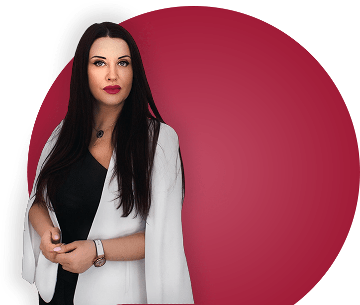
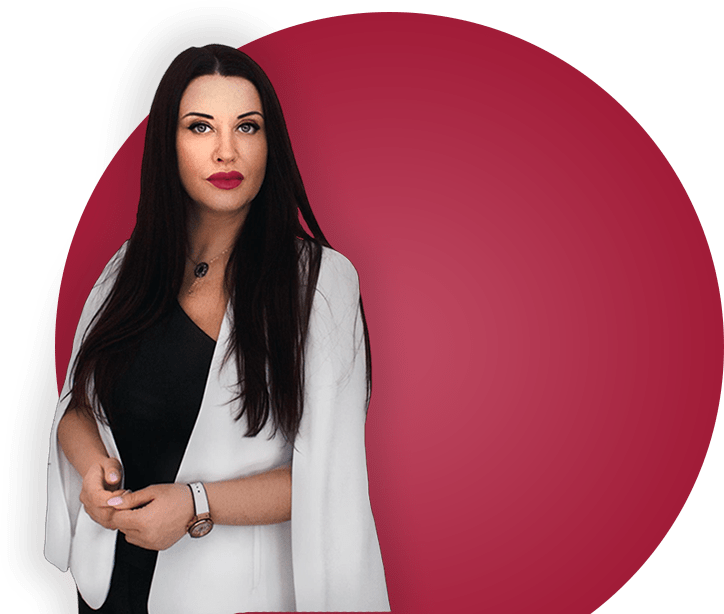

О тренерах:
Жанна Абрамова и Александр Кудряшов
Жанна Абрамова
Жанна Абрамова - мастер практической психологии и технологий осознанности, коуч, системный расстановщик, процессор техники РПТ, специалист по метафорическим картам, эксперт TV-радио-шоу, информационных передач, блоггер, автор тренинговых программ и книг по женской психологии
Жанна более 10 лет работает с женщинами и является экспертом в области отношений между мужчиной и женщиной. Также, постоянно занимается работой с детьми и социальными проектами
- Основатель «Академии Семьи и Брака»
- Мастер практической психологии, факультет клинической психологии Академии при президенте РФ РАНХиГС
- Специалист по метафорическим картам (МАК)
- Системный расстановщик, изучала семейную психотерапию в ИИСТ
- Процессор Техники РПТ (Саймон Роуз) , Тетахилинга (THInK)
- Изучала гипнотерапию, Московский институт гипноза
- Коуч, женский тренер, автор трансформационных программ «Анатомия Отношений», «Управление реальностью», «Мышление будущего», «От перца к сердцу», «Как получать подарки», «МАК – сам себе доктор», «Замуж за 2 недели», «Деньги в голове», «Дуэль с ленью», «Возврат ваших вложений», «Третий лишний или как устранить соперницу»


{kind=link}
{kind=link}
{kind=link}
Александр Кудряшов
- Специалист Дистанционного видения (Вьювер)
- Почетный парапсихолог России
- Расстановщик по методу Берта Хеллингера и Зиглинды Шнайдер
- Мастер по работе с детскими и родовыми травмами
Более 1000 человек на личной консультации избавил от страхов, фобий, зажимов, дискомфортов и других проблем, которые мешали им идти к успеху!